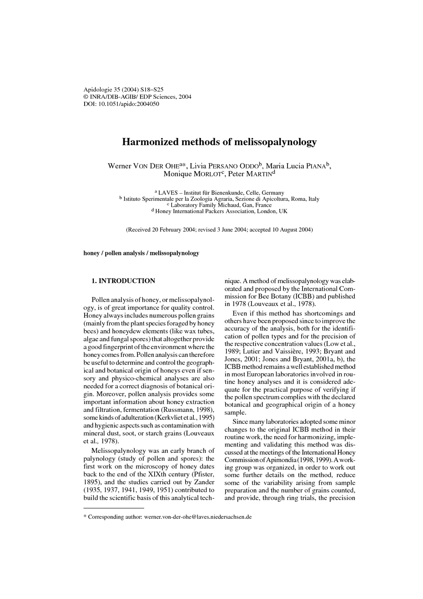

Free Access
| Issue |
Apidologie
Volume 35, Number Suppl. 1, 2004
European unifloral honeys
|
|
|---|---|---|
| Page(s) | S18 - S25 | |
| DOI | https://doi.org/10.1051/apido:2004050 | |
Apidologie 35 (2004) S18-S25
DOI: 10.1051/apido:2004050
a LAVES - Institut für Bienenkunde, Celle, Germany
b Istituto Sperimentale per la Zoologia Agraria, Sezione di Apicoltura, Roma, Italy
c Laboratory Family Michaud, Gan, France
d Honey International Packers Association, London, UK
(Received 20 February 2004; revised 3 June 2004; accepted 10 August 2004)
Key words: honey / pollen analysis / melissopalynology
Corresponding author: Werner Von Der Ohe werner.von-der-ohe@laves.niedersachsen.de
© INRA, EDP Sciences, DIB, AGIB 2004
DOI: 10.1051/apido:2004050
Harmonized methods of melissopalynology
Werner Von Der Ohea, Livia Persano Oddob, Maria Lucia Pianab, Monique Morlotc and Peter Martinda LAVES - Institut für Bienenkunde, Celle, Germany
b Istituto Sperimentale per la Zoologia Agraria, Sezione di Apicoltura, Roma, Italy
c Laboratory Family Michaud, Gan, France
d Honey International Packers Association, London, UK
(Received 20 February 2004; revised 3 June 2004; accepted 10 August 2004)
Without abstract
Key words: honey / pollen analysis / melissopalynology
Corresponding author: Werner Von Der Ohe werner.von-der-ohe@laves.niedersachsen.de
© INRA, EDP Sciences, DIB, AGIB 2004
First page of the article
